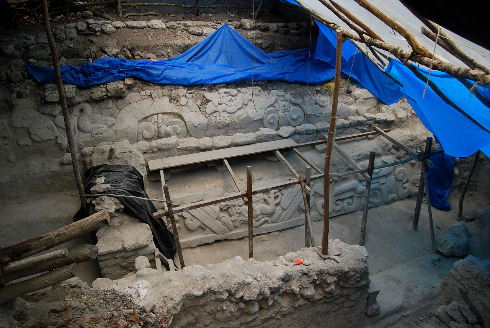

An Overview of the Maya
The Maya Empire, centered in the tropical lowlands of what is now Guatemala, reached the peak of its power and influence around the sixth century A.D. The Maya excelled at agriculture, pottery, writing, calendars and mathematics, and left behind an astonishing amount of impressive architecture and symbolic artwork. Most of the great stone cities of the Maya were abandoned by A.D. 900, however, and since the 19th century scholars have debated what might have caused this dramatic decline.
Origins of the Maya
While the origins of Maya culture remain murky, it's thought to have first emerged between 7000 B.C. and 2000 B.C., when hunter-gatherers abandoned their nomadic habits and created more permanent settlements. Recent analyses suggest that those first settlers came from South America and likely developed their staple food, maize, by 4000 B.C. Maize cultivation dramatically changed the Maya's trajectory, literally fueling the explosion of their society and culture.
Time Periods
The history of Mesoamerica is usually divided into specific periods which, taken together, reveal the development of culture in the region and, for the purposes of this definition, the emergence and cultivation of the Maya Civilization. Scroll down further for a timeline of the Maya Civilization and the periods of time it went through.
The Maya Currently
From the late eighth through the end of the ninth century, something unknown happened to shake the Maya civilization to its foundations. One by one, the Classic cities in the southern lowlands were abandoned, and by A.D. 900, Mayan civilization in that region had collapsed. The reason for this mysterious decline is unknown, though scholars have developed several competing theories. Some believe that by the ninth century the Maya had exhausted the environment around them to the point that it could no longer sustain a very large population.
Preclassic period (2000 BC - 250 AD)
The Maya developed their first civilization in the Preclassic period. Settlements were established around 1800 BC in the Soconusco region of the Pacific coast, and the Maya were already cultivating the staple crops of maize, beans, squash, and chili pepper. This period was characterised by sedentary communities and the introduction of pottery and fired clay figurines.
Classic period (250-900 AD)
The Classic period is largely defined as the period during which the lowland Maya raised dated monuments using the Long Count calendar. This period marked the peak of large-scale construction and urbanism, the recording of monumental inscriptions, and demonstrated significant intellectual and artistic development, particularly in the southern lowland regions. The Classic period Maya political landscape has been likened to that of Renaissance Italy or Classical Greece, with multiple city-states engaged in a complex network of alliances and enmities.
Classic Maya collapse
During the 9th century AD, the central Maya region suffered major political collapse, marked by the abandonment of cities, the ending of dynasties, and a northward shift in activity. No universally accepted theory explains this collapse, but it likely had a combination of causes, including endemic internecine warfare, overpopulation resulting in severe environmental degradation, and drought.
Postclassic period (950-1539 AD)
Although much reduced, a significant Maya presence remained into the Postclassic period after the abandonment of the major Classic period cities Activity shifted to the northern lowlands and the Maya Highlands; this may have involved migration from the southern lowlands, because many Postclassic Maya groups had migration myths.
Spanish conquest (1511-1697 AD)
In 1511, a Spanish caravel was wrecked in the Caribbean, and about a dozen survivors made landfall on the coast of Yucatán. They were seized by a Maya lord, and most were sacrificed, although two escaped. From 1517 to 1519, three separate Spanish expeditions explored the Yucatán coast, and engaged in a number of battles with the Maya inhabitants.